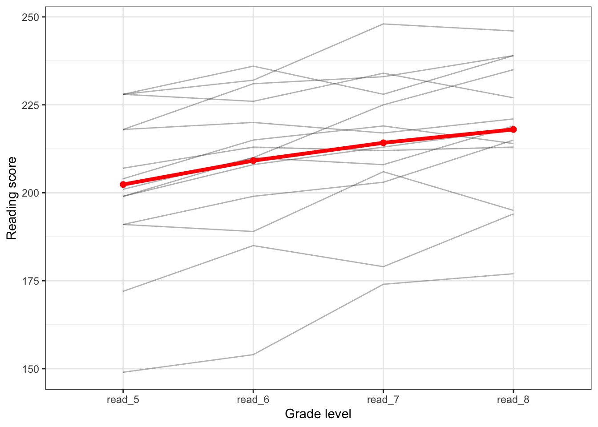
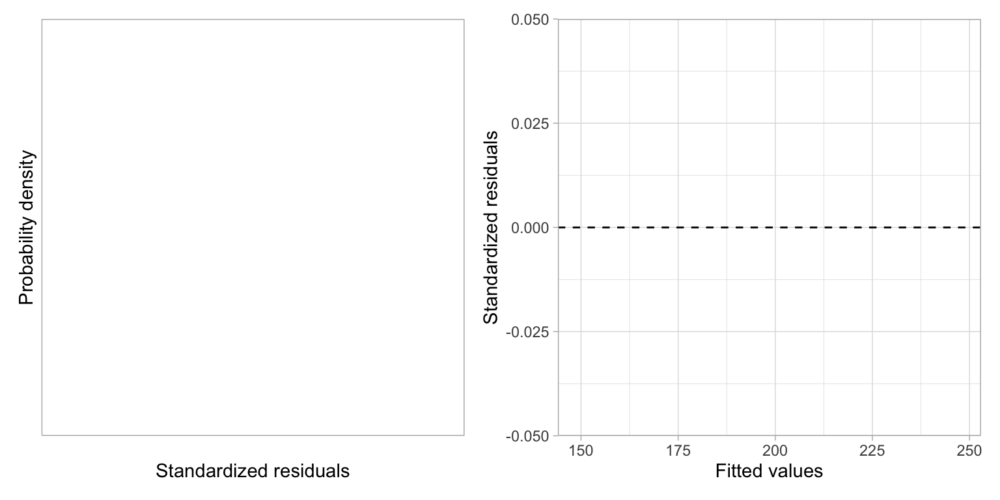

RM-ANOVA
In this essay we will use data from \(n=22\) students to explore the longitudinal question of whether there are mean differences in reading scores over time. To do this we will carry out a repeated measures analysis of variance (RM-ANOVA) on a set of data provided by @Long:2011. To begin the analysis, we will load four packages that we will use in this analysis.
# Load libraries
library(broom)
library(corrr)
library(ez)
library(tidyverse)We will import the data from the file minneapolis.csv using the read_csv() function from the {tidyverse} package.
# Import data
mpls = read_csv("https://raw.githubusercontent.com/zief0002/musings/master/data/minneapolis.csv")
# View data
mpls# A tibble: 22 × 6
student read_5 read_6 read_7 read_8 minority
<dbl> <dbl> <dbl> <dbl> <dbl> <dbl>
1 1 172 185 179 194 1
2 2 200 210 209 NA 1
3 3 191 199 203 215 1
4 4 200 195 194 NA 1
5 5 207 213 212 213 1
6 6 191 189 206 195 1
7 7 199 208 213 218 1
8 8 191 194 194 NA 1
9 9 149 154 174 177 1
10 10 200 212 213 NA 1
# ℹ 12 more rowsWide vs. Long Data Structures
There are two primary data structures for working with repeated measures data, wide and long formatted data. Currently, the mpls data is structured as wide data. In the wide structure, there are multiple columns representing the repeated measures that are collected for each case. In the mpls data, the data collected longitudinally, the reading scores (i.e., the repeated measures), are recorded in multiple columns, one per grade level, for each student.
| student | read_5 | read_6 | read_7 | read_8 | minority |
|---|---|---|---|---|---|
| 1 | 172 | 185 | 179 | 194 | 1 |
| 2 | 200 | 210 | 209 | 1 | |
| 3 | 191 | 199 | 203 | 215 | 1 |
| 4 | 200 | 195 | 194 | 1 | |
| 5 | 207 | 213 | 212 | 213 | 1 |
| 6 | 191 | 189 | 206 | 195 | 1 |
| 7 | 199 | 208 | 213 | 218 | 1 |
| 8 | 191 | 194 | 194 | 1 | |
| 9 | 149 | 154 | 174 | 177 | 1 |
| 10 | 200 | 212 | 213 | 1 | |
| 11 | 218 | 231 | 233 | 239 | 0 |
| 12 | 228 | 232 | 248 | 246 | 0 |
| 13 | 228 | 236 | 228 | 239 | 0 |
| 14 | 199 | 210 | 225 | 235 | 1 |
| 15 | 218 | 223 | 236 | 0 | |
| 16 | 228 | 226 | 234 | 227 | 0 |
| 17 | 201 | 210 | 208 | 219 | 0 |
| 18 | 218 | 220 | 217 | 221 | 0 |
| 19 | 215 | 216 | 221 | 0 | |
| 20 | 204 | 215 | 219 | 214 | 1 |
| 21 | 237 | 241 | 243 | 0 | |
| 22 | 219 | 233 | 236 | 1 |
Long structured (or formatted) data each row is a different case-by-repeated-measure combination. In our example, each row would indicate the data for a particular student at a particular grade level. Each case (i.e., student) would be associated with multiple rows in the long structure. The entire long structured data would have 88 rows (22 students, each with 4 grade levels).
| student | minority | grade | reading_score |
|---|---|---|---|
| 1 | 1 | read_5 | 172 |
| 1 | 1 | read_6 | 185 |
| 1 | 1 | read_7 | 179 |
| 1 | 1 | read_8 | 194 |
| 2 | 1 | read_5 | 200 |
| 2 | 1 | read_6 | 210 |
| 2 | 1 | read_7 | 209 |
| 2 | 1 | read_8 | |
| 3 | 1 | read_5 | 191 |
| 3 | 1 | read_6 | 199 |
| 3 | 1 | read_7 | 203 |
| 3 | 1 | read_8 | 215 |
| 4 | 1 | read_5 | 200 |
| 4 | 1 | read_6 | 195 |
| 4 | 1 | read_7 | 194 |
| 4 | 1 | read_8 |
Both the wide and long structures are useful at different times during the data-analytic cycle. For example, most repeated measures data are entered into a spreadsheet and stored in the wide-format. This is a good way to organize these data initially because it minimizes the redundancy (only 1 row per case) while entering the data into the spreadsheet, thereby minimizing initial coding errors. The wide format can also be useful for descriptive analysis (e.g., computing means, SDs, and correlations) and for carrying out listwise deletion of cases. The long structure is necessary for plotting the data when using {ggplot}. It is also the appropriate structure for computing summaries with {dplyr} functionality and for carrying out all modeling of the data, including the RM-ANOVA.
Missing Data: Listwise Deletion
Many repeated measures studies will have missing data since it is often difficult to obtain data for every subject at every timepoint. The missingness shown in the mpls data, which is consistent with dropout especially at later timepoints, is common for educational studies.
| student | read_5 | read_6 | read_7 | read_8 | minority |
|---|---|---|---|---|---|
| 1 | 172 | 185 | 179 | 194 | 1 |
| 2 | 200 | 210 | 209 | NA | 1 |
| 3 | 191 | 199 | 203 | 215 | 1 |
| 4 | 200 | 195 | 194 | NA | 1 |
| 5 | 207 | 213 | 212 | 213 | 1 |
| 6 | 191 | 189 | 206 | 195 | 1 |
| 7 | 199 | 208 | 213 | 218 | 1 |
| 8 | 191 | 194 | 194 | NA | 1 |
| 9 | 149 | 154 | 174 | 177 | 1 |
| 10 | 200 | 212 | 213 | NA | 1 |
| 11 | 218 | 231 | 233 | 239 | 0 |
| 12 | 228 | 232 | 248 | 246 | 0 |
| 13 | 228 | 236 | 228 | 239 | 0 |
| 14 | 199 | 210 | 225 | 235 | 1 |
| 15 | 218 | 223 | 236 | NA | 0 |
| 16 | 228 | 226 | 234 | 227 | 0 |
| 17 | 201 | 210 | 208 | 219 | 0 |
| 18 | 218 | 220 | 217 | 221 | 0 |
| 19 | 215 | 216 | 221 | NA | 0 |
| 20 | 204 | 215 | 219 | 214 | 1 |
| 21 | 237 | 241 | 243 | NA | 0 |
| 22 | 219 | 233 | 236 | NA | 1 |
Missing data is a problem for most data analysis. There are several ways to deal with missing data, the two most common being:
- Remove missing data (deletion)
- Replace missing values with an actual value (imputation)
Unfortunately, no matter how you treat missing data, there may be a problems for your inferences. If you delete data, is your sample still an unbiased representation of the population? How do you pick values to replace missing values? And, once you do, are the estimates you get still valid? For a fuller treatment of missing data, see @little.
The RM-ANOVA methodology is quite prickly about missing data, namely it cannot use any data from a subject that is missing data at even a single timepoint. This means that we need to delete the eight students with missing data. To do this we will use the drop_na() function from the {tidyverse} package. This function will drop any row with missing data.
# Drop rows with missing data
mpls_complete_cases = mpls |>
drop_na()
# View new data
mpls_complete_cases# A tibble: 14 × 6
student read_5 read_6 read_7 read_8 minority
<dbl> <dbl> <dbl> <dbl> <dbl> <dbl>
1 1 172 185 179 194 1
2 3 191 199 203 215 1
3 5 207 213 212 213 1
4 6 191 189 206 195 1
5 7 199 208 213 218 1
6 9 149 154 174 177 1
7 11 218 231 233 239 0
8 12 228 232 248 246 0
9 13 228 236 228 239 0
10 14 199 210 225 235 1
11 16 228 226 234 227 0
12 17 201 210 208 219 0
13 18 218 220 217 221 0
14 20 204 215 219 214 1The data now contains only the complete cases, the students with no missing data. This treatment of missing data is referred to as listwise or casewise deletion since we deleted whole rows or cases from the data. Note that in our sample, using the complete cases drops our sample size from \(N=22\) to \(N=14\) students. We have omitted nearly 40% of the initial cases! In practice, listwise deletion can result in omitting almost everyone, especially in studies with many timepoints as dropout tends to be high.
Re-Structuring the Data to the Long Format
Ultimately, we will also need the data in the long format to carry out the RM-ANOVA. Structuring from wide to long structured data (or vice versa) is referred to as pivoting the data. As an example of pivoting, consider the first student’s data in the wide data:
| student | read_5 | read_6 | read_7 | read_8 | minority |
|---|---|---|---|---|---|
| 1 | 172 | 185 | 179 | 194 | 1 |
When we pivot this to the long format, we will combine the four reading scores into a single column called reading_score in the long data. We also need to include a column that identifies the grade level (grade) for each of the four reading scores (this is pulled from the original varaible names in the wide data). Finally, the student number and minority data from the wide data are appended to each row of the student’s long data.
| student | minority | grade | reading_score |
|---|---|---|---|
| 1 | 1 | read_5 | 172 |
| 1 | 1 | read_6 | 185 |
| 1 | 1 | read_7 | 179 |
| 1 | 1 | read_8 | 194 |
To re-structure the data from the wide to the long format, we will use the function pivot_longer() from the {tidyverse} package. (The pivot_wider() function re-structures data from the long to the wide format.) We specify the columns that include the data we want to combine into a single column in the long data (cols=), and the new variable names we want in the long data associated with the original variable names (names_to=), and the data values (values_to=). In our example:
# Re-structure data to long format
mpls_long = mpls_complete_cases |>
pivot_longer(
cols = read_5:read_8,
names_to = "grade",
values_to = "reading_score"
)
# View long data
mpls_long# A tibble: 56 × 4
student minority grade reading_score
<dbl> <dbl> <chr> <dbl>
1 1 1 read_5 172
2 1 1 read_6 185
3 1 1 read_7 179
4 1 1 read_8 194
5 3 1 read_5 191
6 3 1 read_6 199
7 3 1 read_7 203
8 3 1 read_8 215
9 5 1 read_5 207
10 5 1 read_6 213
# ℹ 46 more rowsEvaluating the Sample Change Over Time
Is there an effect of time (i.e., a longitudinal effect) on reading scores? To begin to evaluate this, we can plot and numerically summarize the sample data. To graphically evaluate this question, we can plot the reading scores over time using the long formatted data. In this plot, we will (1) group the data by student to examine the individual change profiles, and (2) plot the average reading score over grade level to examine the mean profile.
ggplot(data = mpls_long, aes(x = grade, y = reading_score)) +
# Plot individual profiles
geom_line(aes(group = student), alpha = 0.3) +
# Plot mean profile
stat_summary(fun.y = mean, group = 1, geom = "line", color = "red", lwd = 1.5) +
stat_summary(fun.y = mean, group = 1, geom = "point", color = "red", size = 2) +
theme_bw() +
xlab("Grade level") +
ylab("Reading score")

The plot indicates that the average reading score seems to differ by grade level in the sample. The average reading score seems to be higher at higher grade levels. We can confirm this by computing the mean reading score at each grade level.
mpls_long |>
group_by(grade) |>
summarize(
M = mean(reading_score),
SD = sd(reading_score)
)# A tibble: 4 × 3
grade M SD
<chr> <dbl> <dbl>
1 read_5 202. 22.4
2 read_6 209. 22.0
3 read_7 214. 20.2
4 read_8 218 19.4Effect of Grade-Level
If we didn’t think about the analysis, to examine whether there was a longitudinal effect of grade-level on reading scores, we might fit a model that includes the main effect of grade-level using our long formatted data. To fit the model as an ANOVA, all of the predictors are required to be factors. Since grade is a character variable, it will be treated as a factor in the model.
# Fit model
lm.1 = lm(reading_score ~ 1 + grade, data = mpls_long)
# Partition variation
anova(lm.1)Analysis of Variance Table
Response: reading_score
Df Sum Sq Mean Sq F value Pr(>F)
grade 3 1924.4 641.48 1.4474 0.2397
Residuals 52 23045.3 443.18 There does not appear to be a main effect of time, \(F(3, 52) = 1.45\), \(p = 0.240\). This suggests that the empirical data are consistent with the hypothesis of no differences in the average reading scores across grades.
Grade-by-Student Interaction Model
Aside from an effect of time, the plot in Figure 1 also clearly displays an effect of student; some students have higher reading scores on average than others. Moreover, the plot suggests that there is an interaction effect between grade-level and individual student on reading score. We can see this because the individual growth profiles are not parallel. This implies that the effect of grade-level differs by student.
This implies that we need to fit a model (using the long formatted data) that predicts variation in reading scores and includes:
- A main effect of grade-level
- A main effect of student
- An interaction effect between grade-level and student
To fit this as an ANOVA, all of the predictors are required to be factors. Since grade is a character variable, it will be treated as a factor in the model. The student variable, however, is currently numeric and will need to be coerced into a factor everytime it appears in the model. To fit this model:
# Fit model
lm.1 = lm(reading_score ~ 1 + grade + factor(student) + grade:factor(student), data = mpls_long)
# Partition variation
anova(lm.1)Analysis of Variance Table
Response: reading_score
Df Sum Sq Mean Sq F value Pr(>F)
grade 3 1924.4 641.48 NaN NaN
factor(student) 13 21696.2 1668.94 NaN NaN
grade:factor(student) 39 1349.1 34.59 NaN NaN
Residuals 0 0.0 NaN Before we put too much stock in these results, however, we will evaluate the model’s assumptions.

The residual plots look pretty good—it seems that the assumptions of linearity, normality, and homoskedasticity are all satisfied. But, the assumption of independence is likely violated. Based on our understanding of how education works, we believe that a student’s reading scores from year-to-year are correlated. We can examine this by computing the correlation matrix for the repeated measures using the wide data.
mpls_complete_cases |>
select(read_5:read_8) |>
correlate() |>
shave() |>
fashion(decimals = 3) term read_5 read_6 read_7 read_8
1 read_5
2 read_6 .976
3 read_7 .928 .913
4 read_8 .883 .929 .923 This matrix suggests that students reading scores from grade-to-grade are highly correlated.